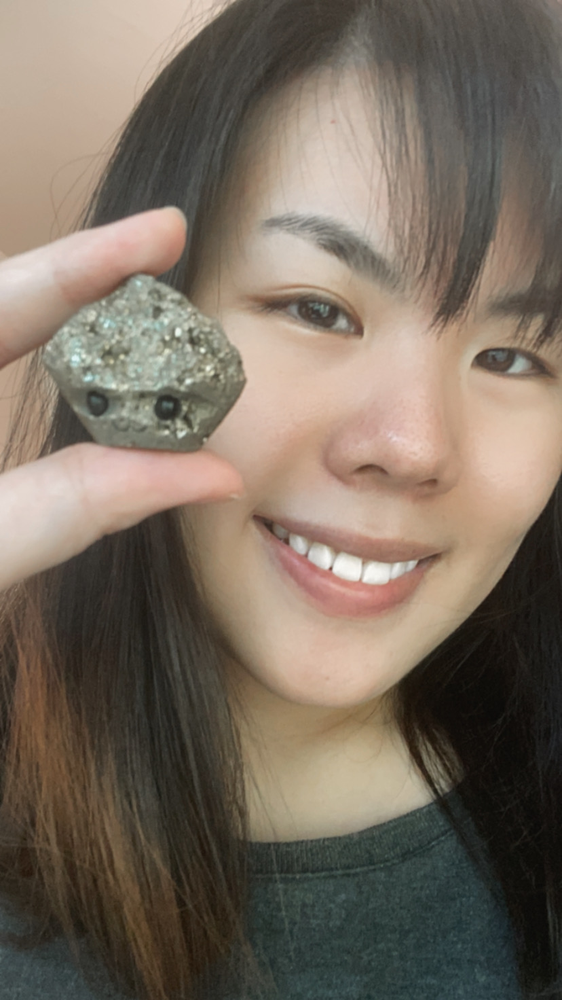
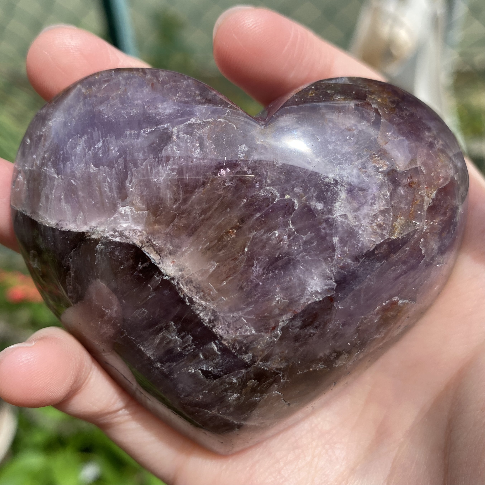
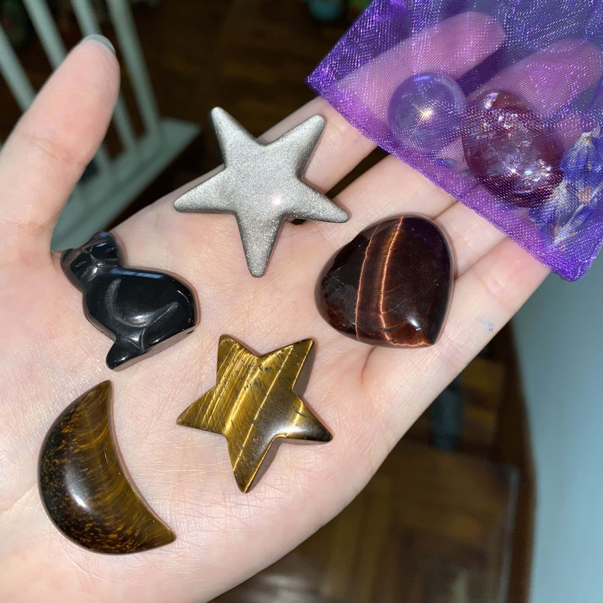
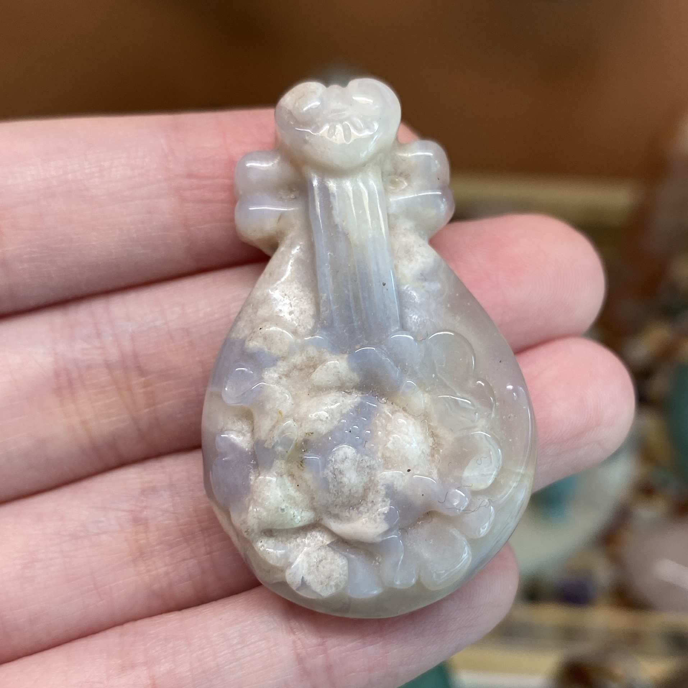
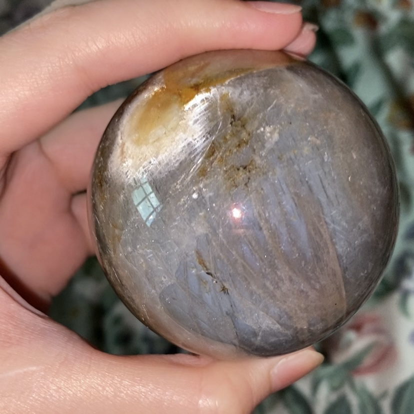
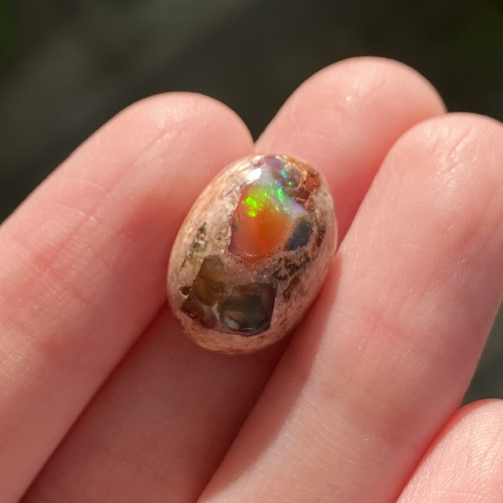
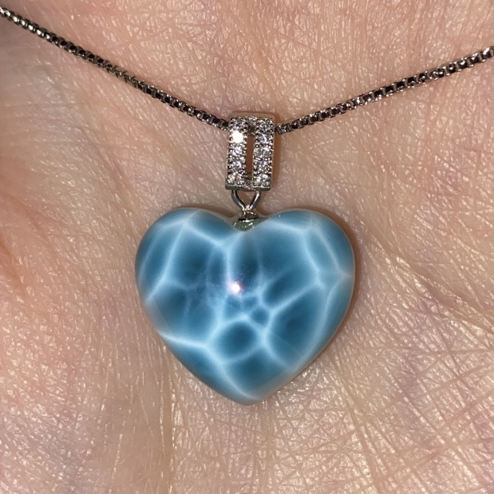
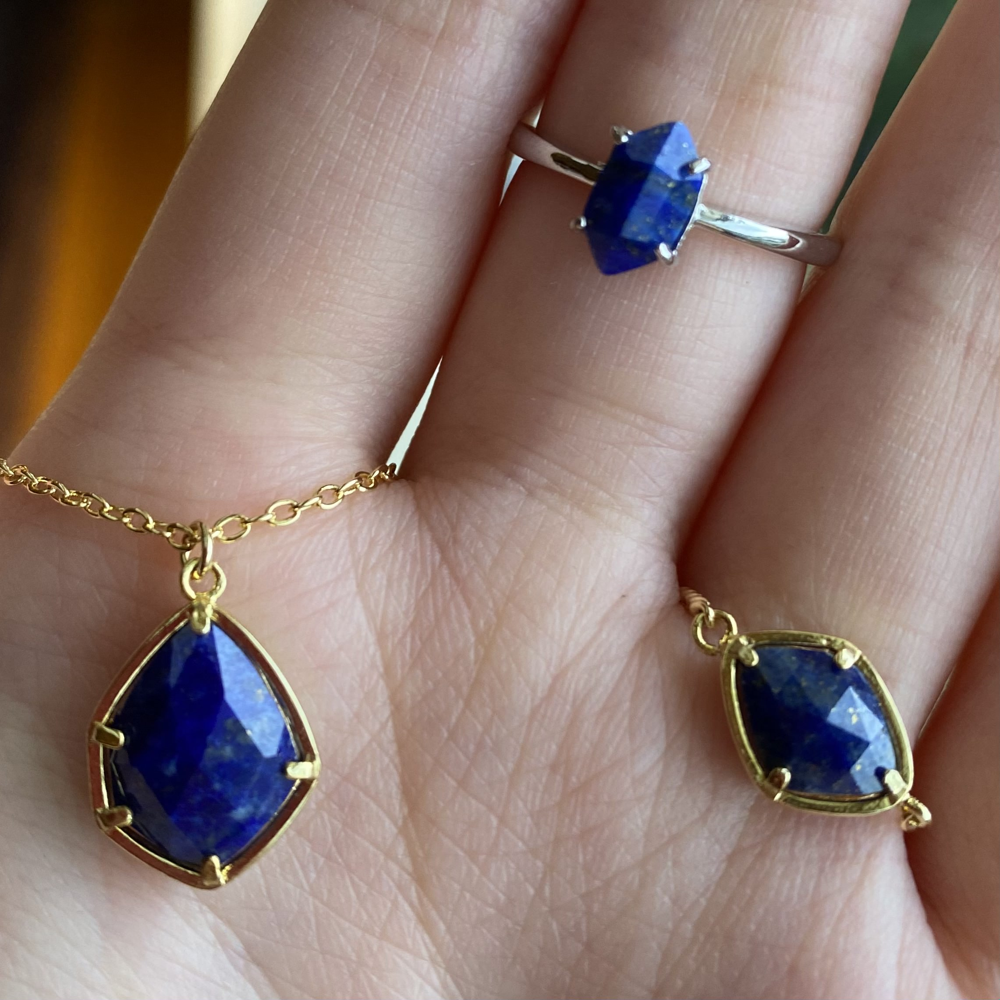
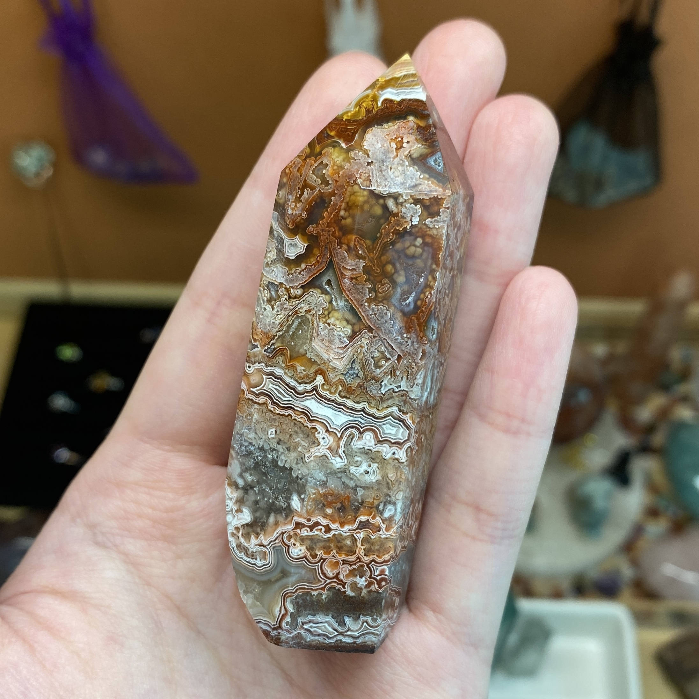
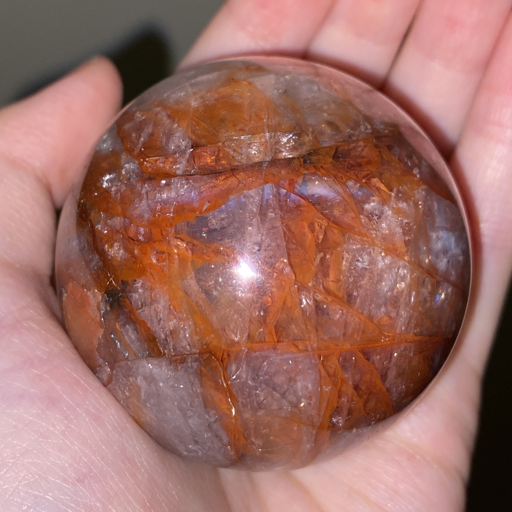

About Me

Selfie with my little Pyrite hedgie (Solar Plexus chakra)
Hi there, I am Rebecca! Welcome to my page all about chakras and crystals! 🔮
Ever since I started collecting crystals a few years back, I notice each of them brings about a unique energetic vibration. This rendered me curious about how crystals are related to our bodily/spiritual energy field(s), which was when I stumbled upon the world of chakra healing with crystals.
Feel free to join me in the discovery of numerous amazing benefits these beautiful, natural crystals bring about! 😌✨
These are some crystals from my personal collection:

Super 7 Heart (naturally comprising Amethyst, Quartz, Smoky Quartz, Cacoxenite, Rutile, Goethite, and Lepidocrocite)
The Super 7 heals, balances, and energises all seven chakras

This mixture of small crystals comprises:
- Tiger's Eye Star and Moon (Root, Sacral and Solar Plexus chakras)
- Red Tiger's Eye Heart (Root chakra)
- Black Obsidian Cat (Root chakra)
- Silver Sheen Obsidian Start (Root and Third Eye chakras)
- Fire Quartz Tumble (Crown chakra)
- Aura Rose Quartz sphere (Crown and Heart chakras)

Sakura Agate Pipa (Root and Heart chakras)

Black Moonstone Sphere (Root and Third Eye chakras)

Mexican Fire Opal (Solar Plexus chakra)

Larimar Heart Pendant (Throat chakra)

Lapis Lazuli Jewellery (Third Eye and Throat chakras)

Crazy Lace Agate Obelisk (Third Eye and Crown chakras)

Fire Quartz Sphere (Crown chakra)